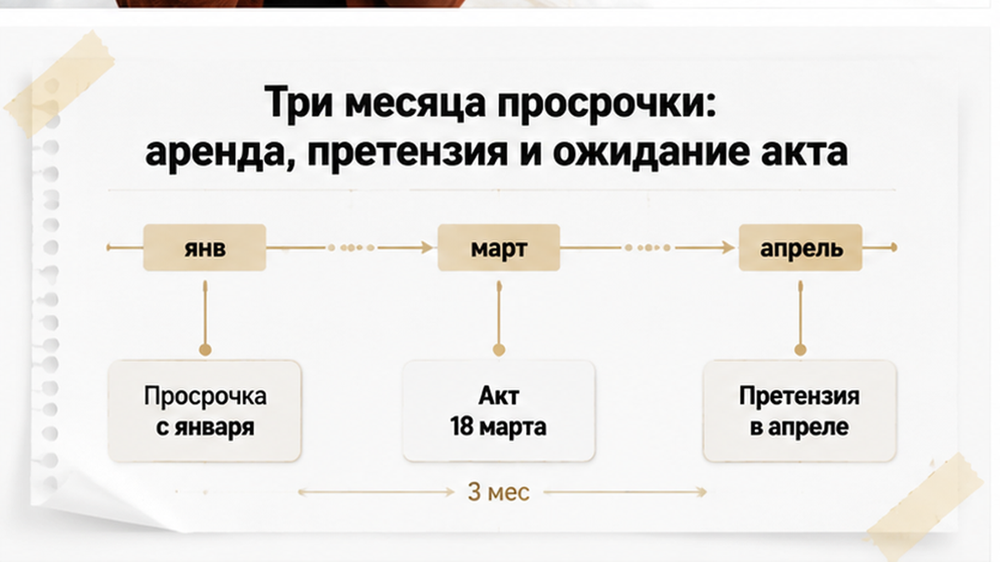
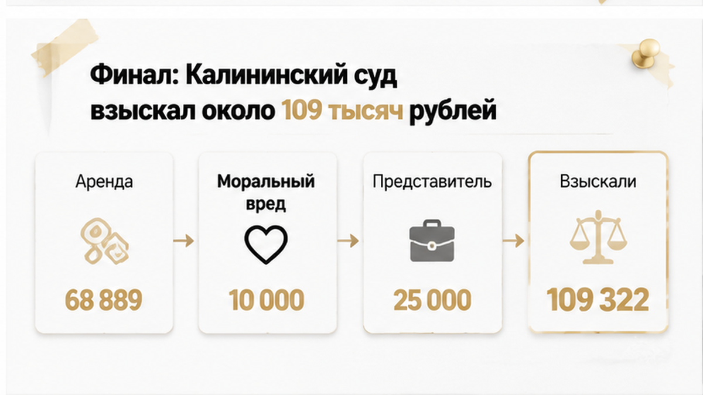
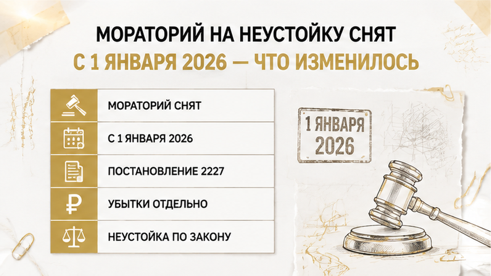

Квартиру оплатили полностью — 6 480 000 рублей, до копейки, ещё в марте 2023 года. По договору ключи должны были передать не позднее 31 декабря того же года, а акт приёма-передачи стороны подписали только 18 марта 2024-го. Почти три месяца женщина платила за съёмное жильё, хотя своя двушка у неё уже была куплена и числилась за ней по ДДУ. Претензию застройщику отправили в апреле 2024 года — ответа по существу не последовало, и дело ушло в Калининский районный суд Тюмени, который взыскал с ООО «Специализированный застройщик «Клевер Строй» подтверждённые убытки и судебные расходы: по названным в публикации позициям это складывается примерно в 109 тысяч рублей. Я разбираю этот сюжет не ради страшилки — он показывает простую и неудобную вещь: оплата, ввод дома и ключи в руках это три разных события, которые почему-то принято считать одним.
Меня зовут Святослав Шакин, я риэлтор в Тюмени — проект The Риэлтор. Разбираю тюменские сделки по документам, а не по обещаниям в отделе продаж: Telegram-канал и MAX — пришлите вопрос по своему ДДУ, отвечу по существу.
Договор участия в долевом строительстве Анастасия М. заключила 29 марта 2023 года. Объект — двухкомнатная квартира в новостройке, цена договора 6 480 000 рублей, оплата прошла полностью. Срок передачи прописали без тумана: не позднее 31 декабря 2023 года.
Вот на этой строке и стоит задержаться. Она не означает «дом сдадут к Новому году». Не означает «в конце года начнут выдавать ключи». И уж точно не означает «где-то в четвёртом квартале, вы же понимаете, стройка».
Срок передачи — это крайняя дата, к которой застройщик обязан передать квартиру по акту. Не получить разрешение на ввод. Не доделать двор. Не отчитаться перед администрацией. А вручить участнику долевого строительства объект и подписать двусторонний документ. С 1 января 2024 года каждый следующий день — уже просрочка, и считается она автоматически, независимо от того, насколько уважительны причины у подрядчика.
Обычный покупатель читает срок передачи как ориентир — выходит из аренды, планирует переезд. Ненормально другое: в договоре дата передачи растворяется среди формулировок про ввод и «в течение стольких-то месяцев после».
Когда я смотрю ДДУ перед подписанием, первым делом ищу в нём одну строку: где здесь календарная дата передачи по акту и от какого события она отсчитывается. Всё остальное — потом.
Второй узел — регистрация. ДДУ работает только после регистрации в Росреестре, и любая заминка на этом этапе бьёт по всей сделке, даже когда деньги одобрены и лежат наготове. Такой сценарий я разбирал в материале о том, как ипотеку одобрили, а регистрацию отменили из-за одной строки в ЕГРН. Механика та же: обязательство на бумаге есть, а события, которого ждёт покупатель, всё нет.

Просрочка началась 1 января 2024 года и закончилась 18 марта 2024-го, когда подписали акт приёма-передачи. Почти три месяца. По меркам долевого строительства не рекорд, но достаточно, чтобы человек попал на живые деньги.
Что происходит с покупателем в этот период, в новостях обычно не показывают. А происходит вот что: квартира куплена и оплачена, но жить в ней нельзя — она ещё не передана. Значит, надо где-то жить. Анастасия М. на время ожидания арендовала жильё, и именно эти платежи стали потом ядром её требований в суде. Не абстрактное «мне причинили неудобства», а договор найма, переводы, расходы за конкретный период, который день в день совпадает с периодом просрочки.
Дальше — претензия. Её направили в апреле 2024 года, уже после подписания акта, и она осталась без удовлетворения.
Многие пишут претензию «для галочки»: мол, всё равно не ответят. На деле это фиксация. С какого числа вы предъявили требование, что именно требовали, какой ответ получили. Молчание застройщика — тоже результат: оно показывает суду, что урегулировать спор без иска вы пытались.
Что делать, пока ключи не отдают. Не подписывать соглашений об изменении срока передачи задним числом — это самый быстрый способ обнулить собственные требования. Сохранять всё, что доказывает вынужденные расходы: договор аренды, расписки или переводы наймодателю, квитанции. Письменно требовать передачи объекта и держать переписку. И принимать квартиру внимательно, но не отказываться от акта из принципа: подписание акта останавливает начисление просрочки, а не лишает вас права на компенсацию за прошедшие месяцы.

Калининский районный суд Тюмени иск удовлетворил частично. По позициям, которые названы в публикации о деле, с застройщика взыскали:
Сложите перечисленное без процентов — получится 109 322 рубля. Это расчётная сумма названных строк, а не обязательно итоговая цифра решения: проценты не раскрыты, полного судебного акта я не видел и додумывать за суд не стану.
Теперь то, что при пересказе таких дел искажают чаще всего. Требования о неустойке, штрафе и процентах заявлялись, иск удовлетворён частично — но публикация подтверждает прежде всего взыскание убытков и судебных расходов. Я не могу утверждать, что суд взыскал именно неустойку по 214-ФЗ. И не могу утверждать обратного — что каждое из этих требований отклонили. Без полного текста решения любая версия будет домыслом.
А вот вывод для практики железный: суд посчитал не страдания, а документально подтверждённые деньги. Аренду за конкретные месяцы, чеки, доверенность, почту. Убытки — это то, что вы можете показать бумагами и связать причинно-следственной связью с задержкой передачи квартиры. Поэтому человек, который три месяца снимал жильё и сохранил договор с платежами, получает взыскание. А человек с ровно теми же обстоятельствами, но без документов, чаще всего не получает ничего.
Ситуация «деньги ушли, а квартиры нет» на вторичке выглядит иначе, но ощущается одинаково — я разбирал её в кейсе о том, как расписку на квартиру написали, а денег на счёте не оказалось. Разница в том, что в долевом строительстве закон даёт покупателю больше опор. Но пользоваться ими нужно вовремя и с документами на руках.
Здесь делаю оговорку, без которой разговор скатится в миф. В публичном материале по делу Анастасии М. эскроу-счёт не упоминается: ни банка, ни даты раскрытия, ни документов по счёту. Поэтому я не утверждаю, что в этом споре деньги ушли застройщику раньше акта. Я говорю о другом — о механизме, который стоит сегодня почти за каждым ДДУ в Тюмени и который люди понимают ровно наоборот.
Логика прописана в законе, и она короткая. По части 6 статьи 15.5 214-ФЗ деньги с эскроу-счёта уходят застройщику не позднее десяти рабочих дней после того, как представлено разрешение на ввод объекта в эксплуатацию либо сведения о таком разрешении размещены в ЕИСЖС.
Всё. Это полный перечень условия.
В нём нет подписания акта приёма-передачи. Нет выдачи ключей. Нет заселения. Нет даже вашего мнения о том, как отделали лестничную клетку.
Отсюда вывод, который на консультации обычно встречают паузой: раскрытие эскроу запускает разрешение на ввод дома, а не ключи в вашей руке. Законна и абсолютно нормальна такая последовательность — сначала разрешение на ввод, потом раскрытие счёта и перечисление денег застройщику, потом передача квартиры по акту, и только затем ключи. Четыре события, четыре даты. Между первой и последней может пройти месяц, а может и больше.
«Значит, эскроу не работает» — обычная реакция. Я читаю иначе: эскроу отвечает на вопрос «не потеряю ли деньги, если дом не построят». На вопрос «когда ключи» — только срок передачи в вашем ДДУ, не банк.
Практический смысл простой: само раскрытие эскроу ничего не доказывает про вашу квартиру. Оно не подтверждает, что объект передан, что он соответствует договору, что вы приняли его без замечаний. Оно подтверждает одно — дом введён, застройщик получил доступ к деньгам. Похожая развилка бывает и на вторичке, когда платёж уже двинулся, а право покупателя ещё не оформлено: Росреестр останавливает переход права, и покупатель ещё не собственник. Механика другая, ощущение у человека одно и то же.
Когда ко мне приходят с вопросом «нас обманули?», я первым делом прошу выписать даты. Не эмоции, не переписку с менеджером — даты.
Почти всегда выясняется, что в голове у человека одна точка: «дом сдали». А в реальности точек четыре, и у каждой своё юридическое значение. Плюс пятая, базовая — срок передачи объекта по вашему ДДУ. В тюменском деле это было 31 декабря 2023 года, и просрочка считалась именно от неё, а не от того, когда дом «фактически достроили».
| Событие | Что означает | Чем не является | Что проверить |
|---|---|---|---|
| Разрешение на ввод в эксплуатацию | Дом признан пригодным к эксплуатации, объект существует юридически | Не передача квартиры вам и не подтверждение качества вашей отделки | Дату разрешения и размещение сведений в ЕИСЖС |
| Раскрытие эскроу | Деньги перечислены застройщику: до 10 рабочих дней после представления разрешения на ввод или сведений о нём | Не доказательство, что квартира передана участнику ДДУ | Уведомление банка и связь даты с датой разрешения |
| Подписание акта приёма-передачи | Объект юридически передан вам, риски и содержание переходят к вам | Не то же самое, что ввод дома, и не всегда совпадает с ключами | Дату акта, перечень замечаний, кто и когда подписал |
| Передача ключей | Фактический доступ в квартиру, начало ремонта и заселения | Не юридическое событие само по себе, если акт не подписан | Дату выдачи, документ о выдаче, соответствие дате акта |
Разрыв между этими датами — не аномалия, а норма строительного цикла. Проблема начинается там, где застройщик считает срок исполненным по вводу дома, а участник ДДУ — по ключам. И любая мутная формулировка договора превращается в спор ценой в несколько месяцев аренды.
Тот же разрыв между «одобрили» и «состоялось» я разбирал в другом сюжете: ипотеку одобрили, а регистрацию отменили. Там человек тоже считал сделку закрытой на шаг раньше, чем она закрылась юридически.
Мой рабочий совет звучит скучно, но работает: ведите таблицу из четырёх строк с первого дня. Не в переписке — отдельным файлом, со сканами. В суде такая таблица превращается в понятный расчёт периода просрочки. Без неё вы приходите с рассказом «нам всё время обещали».

Это самая свежая часть разбора, и держать её в голове стоит всем, кто подписывает ДДУ в Тюмени прямо сейчас. Постановлением Правительства РФ № 2227 от 30 декабря 2025 года внесены изменения в постановление № 326, и с 1 января 2026 года мораторий на начисление неустойки за нарушение сроков передачи жилья по договорам долевого участия завершён.
Несколько лет застройщики жили в режиме, когда просрочка почти ничего не стоила. Режим закончился.
Дальше две развилки, и путают их постоянно.
И третий пункт, который в разговорах теряется целиком: убытки — это не неустойка. Подтверждённые расходы на аренду жилья за период ожидания к неустойке не относятся и режимом отсрочки её выплаты не покрываются. Это самостоятельное требование, и доказывается оно отдельно — договором найма, платёжными документами, причинной связью между задержкой передачи и вашими тратами. Именно поэтому в тюменском деле центр тяжести оказался на аренде, а не на арифметике по ключевой ставке.
И честная оговорка, без которой разбор был бы кривым. Просрочка у Анастасии М. пришлась на период с 1 января по 18 марта 2024 года, и правила, действующие после 1 января 2026 года, к тому периоду автоматически не применяются. Старое дело показывает механику доказывания. Новые правила определяют, во сколько обойдётся та же задержка тому, кто подписывает договор сегодня.
Две вещи, которые в разговорах склеивают в одну, а в суде они живут отдельно.
Неустойка — санкция за просрочку по ч. 2 ст. 6 214-ФЗ. Убытки — ваши реальные расходы, например аренда на время ожидания. «Мне же положена неустойка, зачем договор аренды?» — слышу часто. Суд считает не закон в вакууме, а деньги, которые вы покажете бумагой.
В тюменском деле центр тяжести оказался именно на аренде: 68 889 рублей убытков. Дальше — моральный вред 10 000, представитель 25 000, доверенность 2 600, почта 266, госпошлина 2 567 и проценты за пользование чужими денежными средствами, сумма которых в публикации не приведена. Названные строки складываются в 109 322 рубля — но это расчётная сумма по опубликованным цифрам, а не обязательно итог решения целиком.
И оговорка, которую я обходить не буду. Иск удовлетворён частично. Требования о неустойке, штрафе и процентах заявлялись, однако публикация подтверждает прежде всего взыскание убытков и судебных расходов. Я не могу сказать, что суд посчитал неустойку по формуле 214-ФЗ. И не могу сказать, что каждое из этих требований отклонили. Для такого вывода нужен полный текст судебного акта, а не пересказ.
Честная формулировка звучит скучнее и полезнее: женщина получила возмещение того, что смогла доказать договором найма и платёжками.
Акт подписали 18 марта 2024 года, претензию направили в апреле — уже после передачи. Ответа не было, дальше только суд.
Теперь по делу. Вот что я реально прошу смотреть клиентов в Тюмени.
До подписания ДДУ:
После ввода дома:
И последнее. Задержка передачи — не единственное место, где сделка спотыкается уже после оплаты. Иногда стопорится сам переход права, и человек с квитанциями на руках юридически ещё не собственник: ипотеку одобрили, а регистрацию отменили из-за строки в ЕГРН. Логика проверки одна: смотрите не на платёж, а на документ, который фиксирует ваш результат.
Эскроу защищает деньги до разрешения на ввод, но не гарантирует ключи в тот же день — подписали бы такой ДДУ, если сроки передачи прописаны неясно?
Сомневаетесь в формулировке срока передачи в своём ДДУ — пришлите пункт договора, посмотрю на трезвый глаз. Телеграм: t.me/Tyumen_Rieltor. MAX: max.ru/id561413315447_biz.
Материал проверен: Святослав Шакин, личный риэлтор в Тюмени. Ориентир для покупателя, не индивидуальная юридическая консультация.